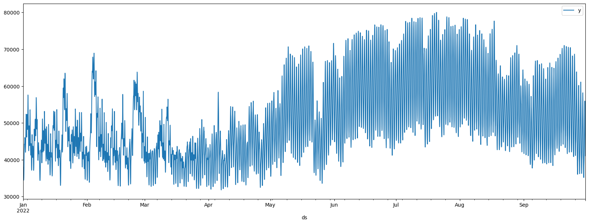
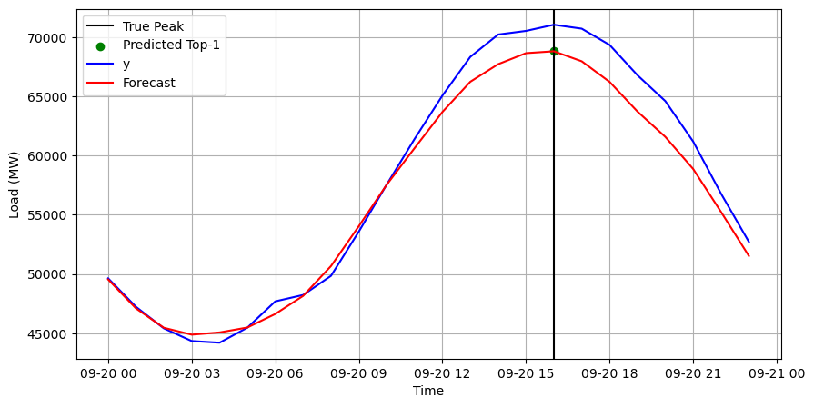

import numpy as np
import pandas as pdDetect Demand Peaks
In this example we will show how to perform electricity load forecasting on the ERCOT (Texas) market for detecting daily peaks.
Introduction
Predicting peaks in different markets is useful. In the electricity market, consuming electricity at peak demand is penalized with higher tarifs. When an individual or company consumes electricity when its most demanded, regulators calls that a coincident peak (CP).
In the Texas electricity market (ERCOT), the peak is the monthly 15-minute interval when the ERCOT Grid is at a point of highest capacity. The peak is caused by all consumers’ combined demand on the electrical grid. The coincident peak demand is an important factor used by ERCOT to determine final electricity consumption bills. ERCOT registers the CP demand of each client for 4 months, between June and September, and uses this to adjust electricity prices. Clients can therefore save on electricity bills by reducing the coincident peak demand.
In this example we will train an NHITS model on historic load data to forecast day-ahead peaks on September 2022. Multiple seasonality is traditionally present in low sampled electricity data. Demand exhibits daily and weekly seasonality, with clear patterns for specific hours of the day such as 6:00pm vs 3:00am or for specific days such as Sunday vs Friday.
First, we will load ERCOT historic demand, then we will use the Neuralforecast.cross_validation method to fit the model and forecast daily load during September. Finally, we show how to use the forecasts to detect the coincident peak.
Outline
- Install libraries
- Load and explore the data
- Fit NHITS model and forecast
- Peak detection
Tip
You can use Colab to run this Notebook interactively 
Libraries
We assume you have NeuralForecast already installed. Check this guide for instructions on how to install NeuralForecast.
Install the necessary packages using pip install neuralforecast
Load Data
The input to NeuralForecast models is always a data frame in long format with three columns: unique_id, ds and y:
The
unique_id(string, int or category) represents an identifier for the series.The
ds(datestamp or int) column should be either an integer indexing time or a datestamp ideally like YYYY-MM-DD for a date or YYYY-MM-DD HH:MM:SS for a timestamp.The
y(numeric) represents the measurement we wish to forecast. We will rename the
First, download and read the 2022 historic total demand of the ERCOT market, available here. The data processing includes adding the missing hour due to daylight saving time, parsing the date to datetime format, and filtering columns of interest.
# Load data
Y_df = pd.read_csv('https://datasets-nixtla.s3.amazonaws.com/ERCOT-clean.csv', parse_dates=['ds'])
Y_df = Y_df.query("ds >= '2022-01-01' & ds <= '2022-10-01'")Y_df.plot(x='ds', y='y', figsize=(20, 7))<AxesSubplot:xlabel='ds'>
Fit and Forecast with NHITS
Import the NeuralForecast class and the models you need.
from neuralforecast.core import NeuralForecast
from neuralforecast.auto import AutoNHITS/Users/cchallu/opt/anaconda3/envs/neuralforecast/lib/python3.10/site-packages/tqdm/auto.py:22: TqdmWarning: IProgress not found. Please update jupyter and ipywidgets. See https://ipywidgets.readthedocs.io/en/stable/user_install.html
from .autonotebook import tqdm as notebook_tqdmFirst, instantiate the model and define the parameters. To instantiate AutoNHITS you need to define:
h: forecasting horizonloss: training loss. Use theDistributionLossto produce probabilistic forecasts. Default:MAE.config: hyperparameter search space. IfNone, theAutoNHITSclass will use a pre-defined suggested hyperparameter space.num_samples: number of configurations explored.
models = [AutoNHITS(h=24,
config=None, # Uses default config
num_samples=10
)
]We fit the model by instantiating a NeuralForecast object with the following required parameters:
models: a list of models. Select the models you want from models and import them.freq: a string indicating the frequency of the data. (See panda’s available frequencies.)
# Instantiate StatsForecast class as sf
nf = NeuralForecast(
models=models,
freq='H',
)The cross_validation method allows the user to simulate multiple historic forecasts, greatly simplifying pipelines by replacing for loops with fit and predict methods. This method re-trains the model and forecast each window. See this tutorial for an animation of how the windows are defined.
Use the cross_validation method to produce all the daily forecasts for September. To produce daily forecasts set the forecasting horizon h as 24. In this example we are simulating deploying the pipeline during September, so set the number of windows as 30 (one for each day). Finally, set the step size between windows as 24, to only produce one forecast per day.
crossvalidation_df = nf.cross_validation(
df=Y_df,
step_size=24,
n_windows=30
)crossvalidation_df.head()| unique_id | ds | cutoff | AutoNHITS | y | |
|---|---|---|---|---|---|
| 0 | ERCOT | 2022-09-01 00:00:00 | 2022-08-31 23:00:00 | 46184.621094 | 45482.471757 |
| 1 | ERCOT | 2022-09-01 01:00:00 | 2022-08-31 23:00:00 | 44108.359375 | 43602.658043 |
| 2 | ERCOT | 2022-09-01 02:00:00 | 2022-08-31 23:00:00 | 42990.058594 | 42284.817342 |
| 3 | ERCOT | 2022-09-01 03:00:00 | 2022-08-31 23:00:00 | 42040.902344 | 41663.156771 |
| 4 | ERCOT | 2022-09-01 04:00:00 | 2022-08-31 23:00:00 | 42007.972656 | 41710.621904 |
Important
When using cross_validation make sure the forecasts are produced at the desired timestamps. Check the cutoff column which specifices the last timestamp before the forecasting window.
Peak Detection
Finally, we use the forecasts in crossvaldation_df to detect the daily hourly demand peaks. For each day, we set the detected peaks as the highest forecasts. In this case, we want to predict one peak (npeaks); depending on your setting and goals, this parameter might change. For example, the number of peaks can correspond to how many hours a battery can be discharged to reduce demand.
npeaks = 1 # Number of peaksFor the ERCOT 4CP detection task we are interested in correctly predicting the highest monthly load. Next, we filter the day in September with the highest hourly demand and predict the peak.
crossvalidation_df = crossvalidation_df.reset_index()[['ds','y','AutoNHITS']]
max_day = crossvalidation_df.iloc[crossvalidation_df['y'].argmax()].ds.day # Day with maximum load
cv_df_day = crossvalidation_df.query('ds.dt.day == @max_day')
max_hour = cv_df_day['y'].argmax()
peaks = cv_df_day['AutoNHITS'].argsort().iloc[-npeaks:].values # Predicted peaksIn the following plot we see how the model is able to correctly detect the coincident peak for September 2022.
import matplotlib.pyplot as pltplt.figure(figsize=(10, 5))
plt.axvline(cv_df_day.iloc[max_hour]['ds'], color='black', label='True Peak')
plt.scatter(cv_df_day.iloc[peaks]['ds'], cv_df_day.iloc[peaks]['AutoNHITS'], color='green', label=f'Predicted Top-{npeaks}')
plt.plot(cv_df_day['ds'], cv_df_day['y'], label='y', color='blue')
plt.plot(cv_df_day['ds'], cv_df_day['AutoNHITS'], label='Forecast', color='red')
plt.xlabel('Time')
plt.ylabel('Load (MW)')
plt.grid()
plt.legend()<matplotlib.legend.Legend>
Important
In this example we only include September. However, NHITS can correctly predict the peaks for the 4 months of 2022. You can try this by increasing the nwindows parameter of cross_validation or filtering the Y_df dataset. The complete run for all months take only 10 minutes.
References
Give us a ⭐ on Github